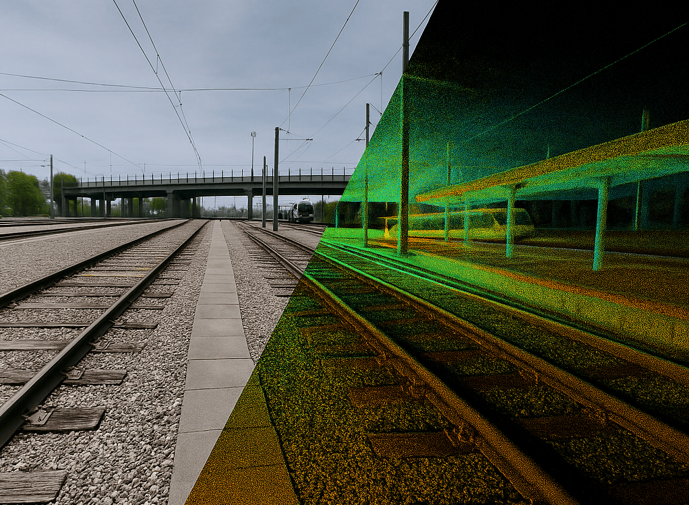
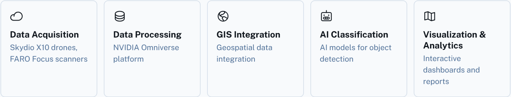

RAILMAP – The Digital Twin of the U.S. Railways
The U.S. rail network faces challenges due to a rising number of derailments, outdated rail data, and limited visualization tools. These issues hinder effective safety management and infrastructure modernization efforts.
RAILMAP addresses these challenges by providing a scalable national model of U.S. railroads. This model will be built from high-resolution drone and laser scan data, utilizing advanced technologies from Skydio, FARO, and NVIDIA Omniverse. The project aims to create a comprehensive and accurate digital representation of the rail infrastructure, enabling enhanced safety analysis, predictive maintenance, and improved operational efficiency.
The initial implementation of RAILMAP focuses on the Dallas–Houston rail corridor, serving as a pilot project to validate the model's effectiveness and scalability. This corridor represents a critical segment of the national rail network, making it an ideal location for initial deployment and testing.
RAILMAP is designed to align with key initiatives and programs from the Department of Transportation (DOT), Federal Railroad Administration (FRA), Cybersecurity and Infrastructure Security Agency (CISA), and the Engineering With Nature program. This alignment ensures that RAILMAP contributes to broader national efforts in transportation safety, infrastructure resilience, and environmental sustainability.
RAILMAP’s mission is to advance the safety, efficiency, and modernization of the U.S. rail network – spanning more than 140,000 miles – through comprehensive digital transformation. The initiative begins with a pilot deployment in the Dallas–Houston corridor, a critical freight and passenger rail link in Texas. This corridor serves as a testbed for RAILMAP’s technologies, methods, and measurable impact.
Following successful validation, RAILMAP will expand to cover all major rail corridors across Texas, partnering with state and regional stakeholders to deliver scalable benefits in safety management and infrastructure planning.
Over the next seven years, RAILMAP is strategically positioned to roll out across the largest and most vital railroad states, including California, Illinois, New York, Florida, Pennsylvania, and Ohio – ultimately establishing a nationwide digital twin of the U.S. railway system.
The primary goal of RAILMAP is the digitalization of the entire U.S. rail network, enabling data-driven decision-making, proactive safety interventions, and a resilient, future-ready infrastructure.
RAILMAP is built on a robust, scalable architecture designed to capture, process, and analyze vast amounts of data from diverse sources. Our technology stack integrates cutting-edge hardware and software to create a comprehensive digital model of the U.S. rail network.

RAILMAP is designed to scale from local deployments to a full U.S. rail network. Our architecture supports distributed processing and storage, ensuring performance and reliability as the system grows. We leverage cloud-based infrastructure to handle increasing data volumes and user demand, providing a seamless experience regardless of the scale of deployment.
RAILMAP utilizes a multi-faceted approach to data acquisition and processing, ensuring the highest level of accuracy and detail.
The initial pilot is focused on the Dallas–Houston corridor, integrating with Class I freight operators and urban transit nodes.
For inquiries, partnerships, or technical collaboration, please email contact@railmap.tech or reach out via LinkedIn.